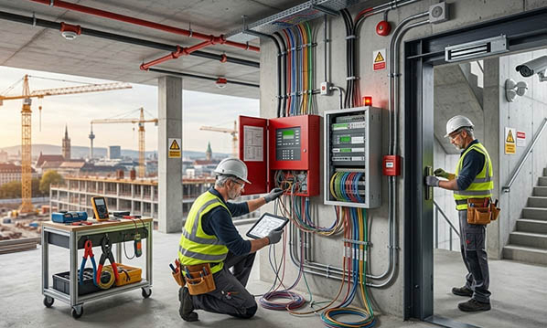

Alarm and security installations are essential for protecting homes, businesses, and public facilities across Germany, as well as in France, Italy, Switzerland, the UK, Norway, Austria, Poland, and the Benelux countries. Modern security systems integrate multiple components, including alarm systems, surveillance cameras, access control systems, and fire alarms, forming a comprehensive safety network. A properly executed security installation protects property, reduces risks of damage or theft, and provides peace of mind for owners and users alike.
For efficient operation and maintenance, clear labeling and security signage are critical. Engraved labels, type plates, industrial plates, cable markers, and wayfinding signs help technicians quickly identify components, simplify troubleshooting, and enhance safety during maintenance. Proper labeling also ensures compliance with DIN, VDE, CE marking, and European standards, supporting reliable and professional security installations across Europe.
At SignXpert, we provide customized signs, decals, and labels specifically designed for alarm and security installations. Our solutions are durable, clear, and fully compliant, ensuring both safety and operational efficiency. With fast delivery throughout Germany and Europe, SignXpert enables installers and property managers to maintain well-organized, clearly marked, and fully functional security systems.
Alarm & Security Installations: Protecting Homes and Businesses.
Modern security installations have become a standard for both private and commercial properties. Installing a reliable system ensures protection against burglary, vandalism, fire, and other risks. Comprehensive security solutions often combine alarm systems, surveillance cameras, access control, and fire alarms, providing full coverage of potential threats.
For businesses, this ensures round-the-clock protection of offices, storage facilities, and commercial spaces. For private homes, security systems provide peace of mind for occupants and reduce risk during absences. Professionally executed installations optimize the interaction of all components, maximizing protection and helping to prevent accidents, damage, and loss. Well-labeled systems also support insurance compliance and can potentially reduce premiums.
Components of a Robust Security System.
A complete alarm and security system integrates multiple elements:
- Alarm systems detect unauthorized access or movement and immediately notify owners or security services.
- Surveillance cameras provide visual monitoring and documentation for safety and evidence purposes.
- Access control systems restrict entry to authorized personnel, ensuring secure zones within businesses or facilities.
- Fire alarms detect smoke or heat to prevent major damage.
By combining these components into a single network, properties achieve comprehensive protection. Clear labeling, engraved labels, type plates, and industrial plates ensure each component is easily identified and maintained, supporting swift and effective responses to any security threat.
Safety Through Clear Labeling and Signage.
For alarm and security installations, clear signage and labels are essential for safe operation and maintenance. Properly labeled cables, sensors, alarm units, and cameras allow technicians to troubleshoot quickly and minimize errors, which is critical in urgent situations.
Safety signage marking fire alarms, emergency exits, and monitoring equipment provides preventive guidance to everyone on-site. Durable, visible industrial labels, type plates, and cable markers contribute to organized systems, reducing risk and ensuring security installations are functional and reliable over time.
Why SignXpert is the Leading Supplier for Alarm & Security Labeling.
SignXpert offers high-quality, customized signs, decals, engraved labels, type plates, industrial plates, and cable markers for alarm and security installations across Germany and Europe. Our fast delivery service — including 24-hour shipping — ensures urgent or large projects are completed on schedule.
The user-friendly online system allows easy customization for text, size, material, and layout, making it simple to get exactly the labeling needed. Products are robust, weather-resistant, and highly visible, ensuring long-term reliability for security systems.
By choosing SignXpert, property owners, installers, and security professionals gain a dependable, clear, and cost-effective solution for all security installation labeling needs, compliant with DIN, VDE, CE marking, and European standards, and ready for use across Germany, Austria, Switzerland, France, Italy, the UK, Norway, Poland, and the Benelux countries.